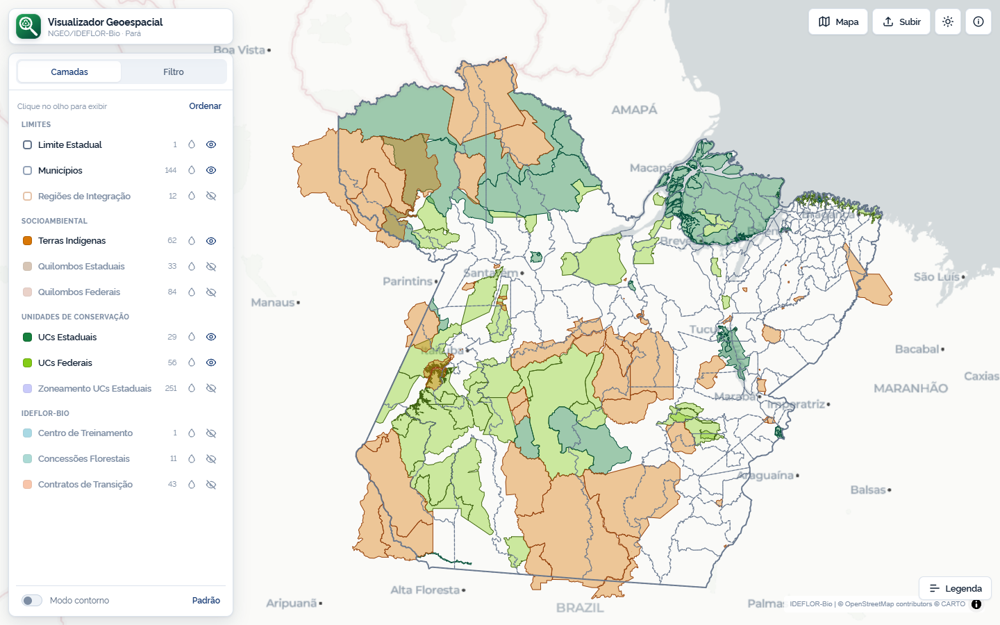
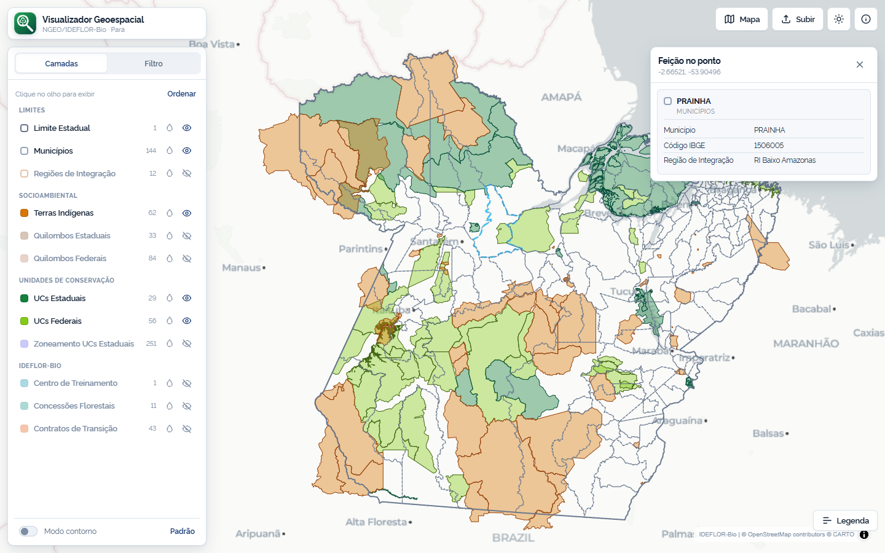
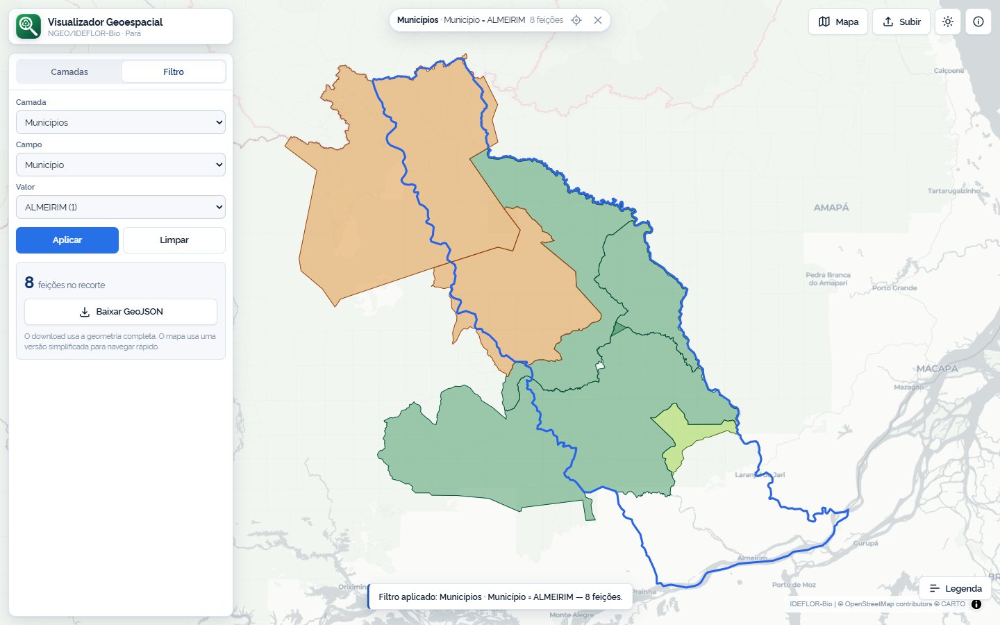
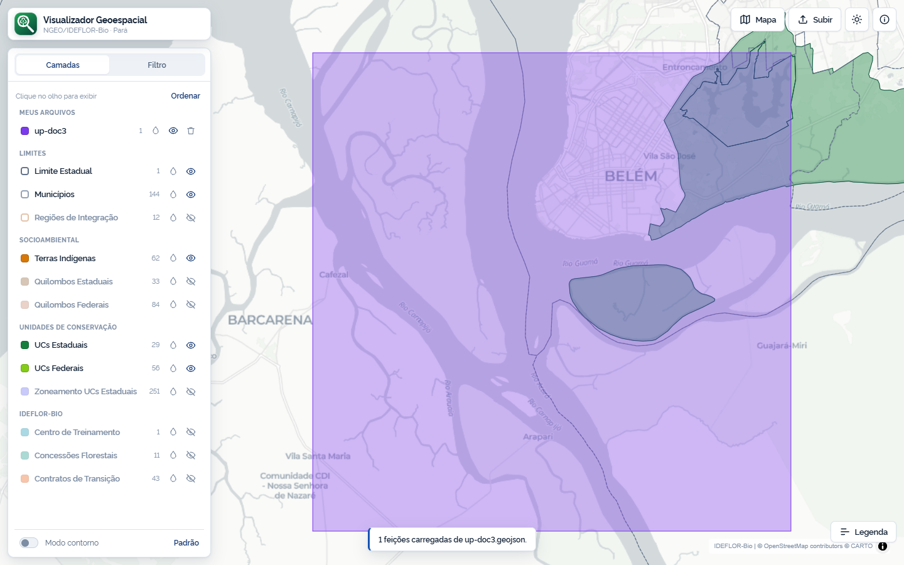
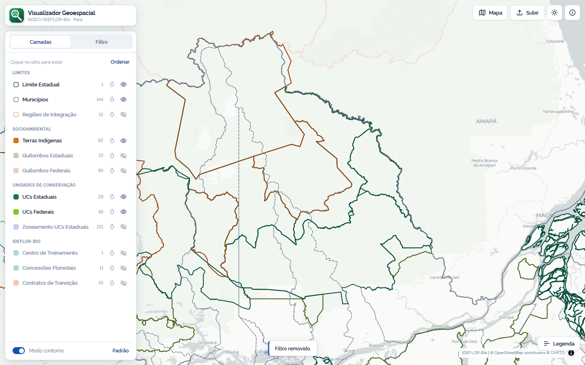

Visão geral
Um WebGIS institucional, focado em leitura e análise — sem telas intermediárias.
O que o app faz
Exibe e consulta as camadas territoriais do Pará. Um clique no mapa mostra os atributos de todas as feições daquele ponto. Filtros isolam recortes por atributo e o resultado pode ser baixado em GeoJSON.
Também é possível carregar um vetor próprio (GeoJSON, KML ou Shapefile) e analisá-lo junto com as bases institucionais.
O que mudou
A versão anterior baixava 80,5 MB de GeoJSON e montava as 11 camadas de uma vez. A v2 usa tiles vetoriais e renderização WebGL: o primeiro mapa carrega cerca de 1 MB e os dados completos ficam no servidor, sob demanda.
O download de recortes continua usando a geometria completa dos arquivos originais.

Como usar
As seis ações que resolvem a maior parte do trabalho.
Exibir camadas
No painel Camadas, clique no olho para ligar ou desligar uma camada. O ícone de gota abre o controle de opacidade. A contagem ao lado indica quantas feições existem na camada.
Identificar um ponto
Clique em qualquer lugar do mapa. A gaveta lateral (ou folha inferior, no celular) lista todas as feições daquele ponto, com os atributos principais e a opção de ver todos os campos.
Filtrar por atributo
Na aba Filtro, escolha camada, campo e valor. O mapa aproxima o recorte automaticamente e destaca o limite em azul. Em municípios e regiões, as camadas sobrepostas também são recortadas.
Baixar o recorte
Com um filtro ativo, use Baixar GeoJSON. O arquivo é gerado com a geometria completa e os atributos originais, incluindo as camadas sobrepostas quando o recorte é territorial.
Subir um vetor
Use Subir para carregar GeoJSON, KML ou Shapefile (`.zip`). O processamento é feito no navegador, sem enviar o arquivo para servidor. A camada entra no catálogo e pode ser filtrada e identificada.
Ordenar a sobreposição
Clique em Ordenar para transformar a lista em uma pilha. Arraste as camadas: o topo da lista é o que aparece na frente. Use Modo contorno para ver só os limites.
Na prática
Quatro situações de uso, direto da interface.




Camadas disponíveis
Todas as camadas usam a mesma base vetorial e são ligadas sob demanda.
| Grupo | Camada | Padrão | Uso principal |
|---|---|---|---|
| Limites | Limite Estadual | Visível | Contorno do Pará e contexto regional |
| Municípios | Visível | Limites municipais e filtro territorial | |
| Regiões de Integração | Oculta | Recortes regionais de planejamento | |
| Socioambiental | Terras Indígenas | Visível | Terras indígenas e atributos de etnia/fase |
| Quilombos Estaduais | Oculta | Territórios quilombolas estaduais | |
| Quilombos Federais | Oculta | Territórios quilombolas federais | |
| Conservação | UCs Estaduais | Visível | Unidades de conservação estaduais |
| UCs Federais | Visível | Unidades de conservação federais | |
| Zoneamento UCs Estaduais | Oculta | Zonas internas com simbologia institucional | |
| IDEFLOR-Bio | Centro de Treinamento | Oculta | Centro de Treinamento Agroflorestal |
| Concessões Florestais | Oculta | Unidades de manejo florestal sob concessão | |
| Contratos de Transição | Oculta | Contratos temporários de oferta de madeira |
Dados e desempenho
O mapa e o download usam a mesma base, em resoluções diferentes — de propósito.
| Etapa | Versão anterior | Versão 2 |
|---|---|---|
| GeoJSON baixado no carregamento | 80,5 MB (~27 MB gzip) | 0 MB de GeoJSON; ~250 KB de tiles |
| Camadas montadas no boot | 11 | 5 visíveis (as demais sob demanda) |
| Renderização | SVG (1 path por anel) | WebGL (MapLibre GL) |
| Transferência inicial total | ~27 MB | ~1 MB |
| Download de recorte | GeoJSON completo em memória | GeoJSON original, buscado só no download |
.pmtiles com zoom 4–12
e simplificação por nível. O navegador lê o cabeçalho e apenas os tiles da área visível, usando
HTTP Range. Ao filtrar ou baixar, o app busca o GeoJSON original em resolução completa.
Campos usados no filtro são pré-calculados em data/layers.json.
Limitações e cuidados
- O mapa usa geometria simplificada nos tiles. Para medidas e arquivos finais, use o download em GeoJSON.
- O primeiro download de um recorte grande (zoneamento, UCs federais) pode levar alguns segundos; depois fica em cache na sessão.
- Uploads valem para a sessão atual — recarregar a página remove os arquivos carregados.
- Campos com mais de 250 valores únicos (por exemplo, área) não são oferecidos no filtro.
- O app precisa ser servido por HTTP. Abrir o
index.htmldireto do disco não funciona por causa dos módulos ES e do PMTiles.
Tecnologias
MapLibre GL JS
Renderização vetorial em WebGL, com zoom e deslocamento fluidos.
PMTiles
Arquivo único de tiles vetoriais, lido por Range Requests. Sem servidor de tiles dedicado.
Tippecanoe
Geração dos tiles a partir dos GeoJSON, com simplificação e controle de zoom.
shpjs + toGeoJSON
Leitura de Shapefile e KML no navegador, sem upload para servidor.
SortableJS
Reordenação das camadas por arrastar e soltar.
Rawline
Tipografia do Design System do Governo Federal (gov.br).